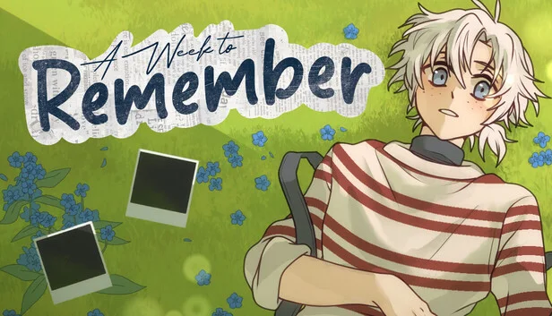
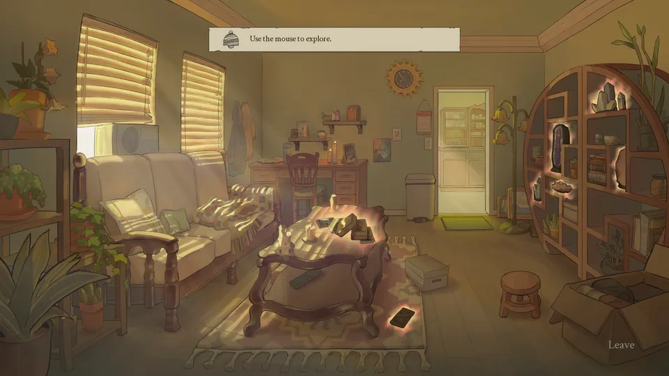

A Week to Remember
Visual novel comercial em Ren'Py/Python, com lançamento completo previsto para 2027. Sou o único desenvolvedor de um time de 10 pessoas.
- Sistema de escolhas e ramificações: 5 finais até agora, estruturado para mais de 20.
- Mecânicas de criação de feitiços, exploração point-and-click e um celular funcional.
- GUI acessível: texto alternativo, legendas, suporte a controle e alto contraste.
- Playtests fechados no itch.io com mais de 150 downloads e quase 500 wishlists na Steam.
Ren'Py · Python · Git · Scrum